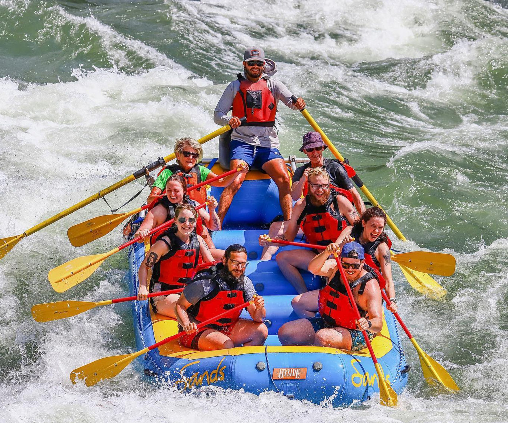

Nestled within the rugged beauty of the canyon, our rafting site whispers tales of both exhilarating adventure and serene tranquility. As the sun paints the cliffs in hues of amber and gold, the river beckons with its timeless allure, promising a journey etched with the echoes of history and the thrill of the unknown.
For decades, this winding waterway has been a sanctuary for explorers seeking the rush of adrenaline amidst nature's grandeur. From its humble origins as a vital route for early settlers, to its evolution into a playground for modern adventurers, every ripple in its currents carries the weight of countless stories.
As you navigate the frothy rapids and gentle stretches, you're not just embarking on a physical expedition; you're stepping into a living museum of the past. Imagine the whispers of Native American tribes who once revered these waters, or the resolute spirit of pioneers who braved its depths in search of new horizons.

Yet, amidst the echoes of history, there's a palpable sense of the present—a shared moment of camaraderie among fellow rafters, the laughter that dances on the breeze, and the sheer exhilaration of conquering each rapid together. Here, on the cusp of past and present, every paddle stroke becomes a tribute to the timeless spirit of adventure that binds us all.
So, whether you're a seasoned rafter or a first-time adventurer, come, immerse yourself in the rich tapestry of experiences that this rafting site has to offer. Let the river be your guide as you carve your own story into its flowing waters, leaving behind nothing but memories and the promise of future journeys yet to come.